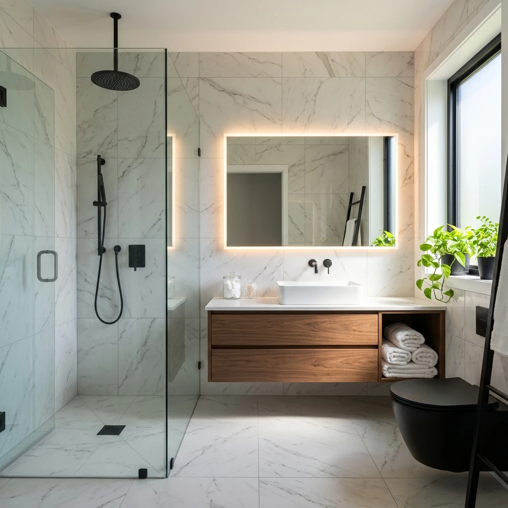

Reformas Integrales en Eibar
Expertos en albañilería, reformas de cocinas y baños en Eibar. Hakim Loukili Bouyadi te ofrece visita técnica gratuita, presupuestos cerrados y 2 años de garantía.
Empresa de Reformas para Eibar
Soluciones Integrales para Pisos y Locales en Eibar
Eibar es uno de los núcleos donde más proyectos realizamos. Conocemos al detalle la arquitectura típica de los pisos eibarreses, adaptando el diseño, la insonorización y las redes de fontanería para garantizar obras duraderas y libres de humedades.
- ✔️ Reformas de baño en Eibar: Sustitución de bañera por plato de ducha antideslizante en 24-48h.
- ✔️ Licencias de obra en Eibar: Asesoramos y gestionamos los trámites ante el Ayuntamiento de Eibar.
- ✔️ Albañilería y Pladur: Alisado de paredes, alicatados porcelánicos y tabiquería con pladur hidrófugo.
- ✔️ Garantía directa con Hakim: Un único interlocutor responsable de coordinar a todos los gremios.

Cliente satisfecho en Eibar
★★★★★
"Contratamos a Hakim para una reforma integral en Eibar. Nos gestionó todo: albañilería, fontanería y pintura. Precio ajustado, trato excelente y entrega en el plazo acordado."Javier M. — Vecino de Eibar